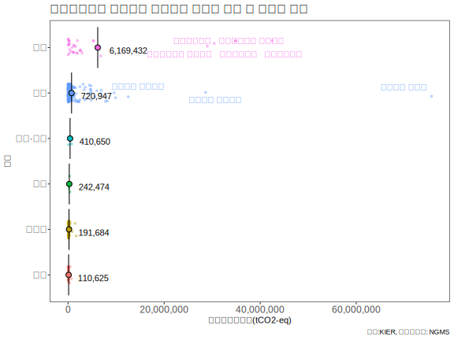
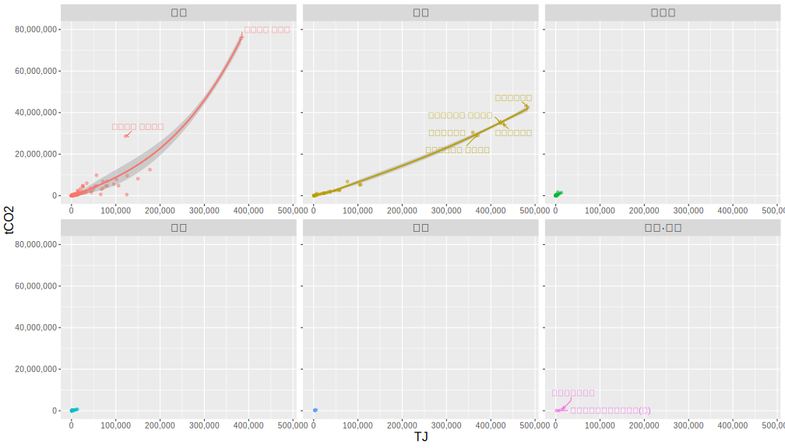
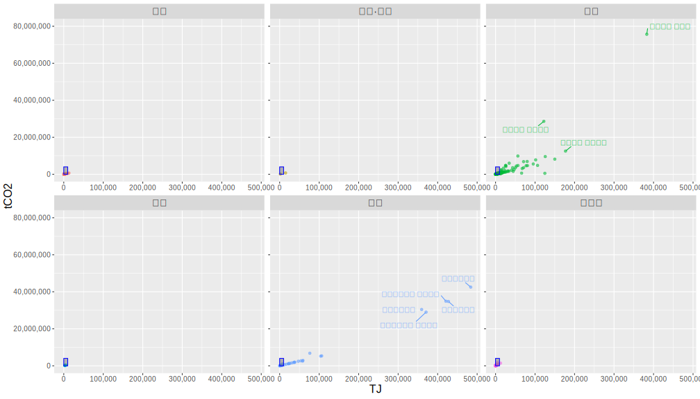
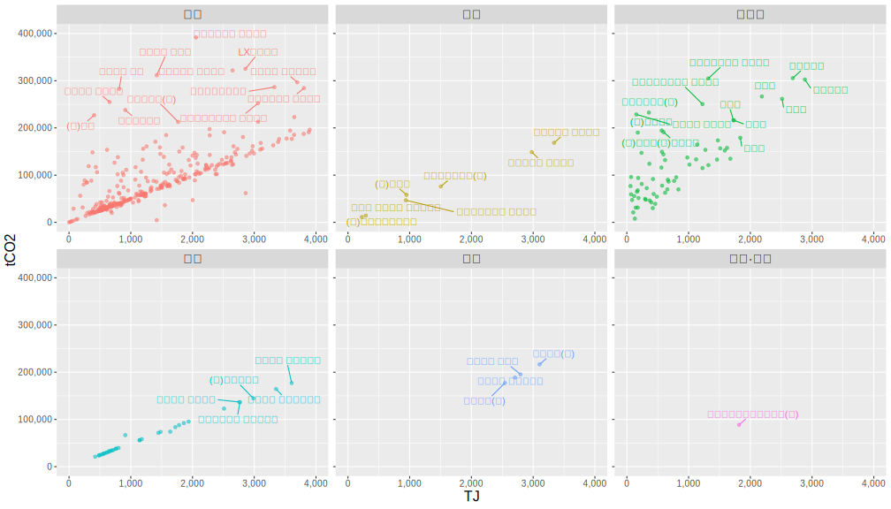
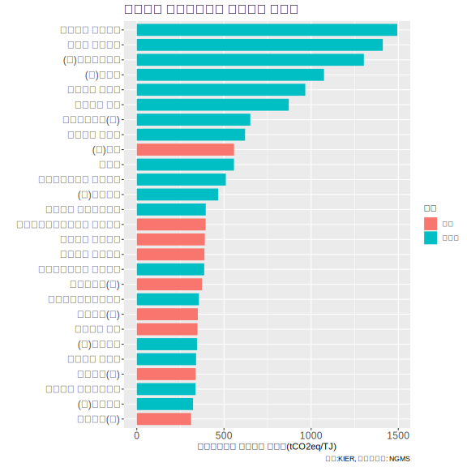

온실가스 할당대상업체 (2021.12.30 명세서 기준) 분석
명세서배출량 통계 - 2021년도 명세서 주요정보 - 업체배출량
업체별 명세서 주요 정보를 보면 관리업체가 속하는 부문과 업종, 그리고 온실가스 배출량과 에너지 사용량 등을 확인할 수 있다.
관리업체는 할당대상업체와 목표관리업체로 구분된다
(관리업체 = 할당대상업체 + 목표관리업체)
관리업체 수는 할당대상업체 607개, 목표관리업체 448개이다.
리스트에서 일부를 캡처해보았다.
Fig.1 - 할당대상업체 명세서 주요 정보(데이터가 누락된 업체를 제외한 607개)
할당대상업체는 부문 정보가 포함되어 있으나, 목표관리업체는 부문 정보가 포함되지 않았다.
본 분석에서 부문별 분석 결과는 할당대상업체로 분석 범위를 제한한 것이다.
할당대상업체의 계획업종은 제10차 한국표준산업분류에 따라 구분된 것이다.
Fig.1 - 목표관리업체 명세서 주요 정보(데이터가 누락된 업체를 제외한 448개)
할당대상업체와 목표관리업체의 수는 큰 차이가 나지 않지만 온실가스 배출량은 분석해보면 큰 차이가 보인다
2021년 기준 전체 관리업체의 온실가스 배출량은 587,516,989 tCO2 이며,
할당대상업체 95.8%, 목표제시업체 4.2%로 구분된다
할당대상업체에서 온실가스 감축이 중요하겠군..

할당대상업체만 분석해보자(온실가스 배출량의 절대량을 줄이기 위해서는 할당대상업체만 집중 공략 필요)
할당대상업체 607개 중에서 부문별로 파악해보자
산업 453, 전환 35, 폐기물 72, 건물, 39, 수송 6, 공공/기타 2개로 구성된다.
산업(55.5%)과 전환(36.8%) 부문의 합이 할당된 온실가스 배출량의 92.4%를 차지한다
위 그래프가 아래 그래프로 동적으로 변하는 라이브러리가 있나?? d3 js?
https://echarts.apache.org/examples/en/editor.html?c=scatter-aggregate-bar 활용해서 변하도록!!!
600여개의 기업에 대한 점이 찍힌게 맞나 싶지만?.. 대부분 0에 가까운 곳에 찍혀있어서 중복되서 그렇다.
부문별로 온실가스 배출량을 나타낸 그래프
동그라미는 부문별 업체당 평균 배출량을 나타냄
산업 부문에 온실가스 최다 배출 업체인 포스코가 속하지만, 전환 부문에는 온실가스 다배출 업체인 발전사가 있기에,
업체별 평균 온실가스 배출량은 전환 분야가 가장 높은 것을 확인할 수 있다.

부문별로 그래프를 세분화해서 보자
예상했던 대로 산업과 전환분야에서만 온실가스 배출량이 높은 수치들이 확인된다.
그 외의 건물, 수송, 폐기물, 공공/기타 부문은 잘 보이지도 않는다.

추세선과 함께

밀집된 부분만 확대해서 보자. 어느정도 확대할지? 산업을 제외한 타 분야의 분포가 잘 보이는 수준까지 스케일 조정.

확대해서!!!!!!
밀집된 부분들을 보자
축이 많이 달라졌다. -> 이를 직관적으로 확인할 수 있는 웹 기술 적용 필요

2. 산업과 전환 부문이 온실가스 할당량의 92.4%를 차지한다. -> 산업과 전환만 하나의 그래프에 놓고 보자!!!
아래 그래프는 에너지사용량(TJ)과 온실가스배출량(CO2eq)의 관계를 나타낸다.
x축은 에너지사용량을 나타내며, 전환 부문의 발전사 5곳과 포스코의 에너지 사용량이 타 업체보다 월등히 높은 것을 확인할 수 있다.
주요 발전사 5곳의 온실가스 배출량은 31.5%를 차지하며, 막대한 에너지를 사용하는 발전사의 성격을 보여준다.
y축은 온실가스 배출량을 나타내며, 포스코 업체 1곳의 온실가스 배출량이 13.9%를 차지하는 것을 확인할 수 있다.
발전사 5곳의 온싱가스 배출량에 이어 현대제철의 배출량은 5.3%를 차지한다.
그 외에 주요 배출 기업으로 삼성전자, S-Oil, 쌍용씨앤이, LG화학, 삼표시멘트, 롯데케미칼 등을 확인할 수 있다
온실가스 배출 상위 40개 업체가 차지하는 온실가스 배출량은 전체의 75%를 차지함
산업과 전환 분야의 업체가 대부분으로 파악된다.

3. 한국표준산업분류(KSIC)* 별로 배출량을 파악해보자
경제적 특성을 객관적으로 반영하고, 업종간 기준을 통일적으로 적용하도록 최신 통계 기준인
제10차 한국표준산업분류의 소분류 기준으로 분류한다.
온실가스 배출이 많은 업종은 전기업(34.3%), 1차 철강 제조업(19.2%), 기초화학물질 제조업(8.1%),
시멘트, 석회 및 플라스터 제조업(6.5%), 석유 정제품 제조업(5.3%), 반도체 제조업(3.4%) 등이 있다.
*KSIC : Korean Standard Industrial Classification
온실가스 배출이 많은 업종은 전기업(34.3%), 1차 철강 제조업(19.2%), 기초화학물질 제조업(8.1%),
시멘트, 석회 및 플라스터 제조업(6.5%), 석유 정제품 제조업(5.3%), 반도체 제조업(3.4%) 등이 있다.

4. tCO2eq/TJ 에너지소비당 온실가스 배출량 보자
에너지소비당 온실가스 배출량은 의외의 결과가 보인다.
폐기물 분야의 업체의 에너지소비당 온실가스 배출량이 높은 것으로 보인다.
기업별 에너지소비당 온실가스 배출량을 보면(배출 상위 30개 업체)
상위 9개 업체를 폐기물 분야가 차지하고 있고, 그 이후는 폐기물과 산업부분에서 대부분을 차지하는 것을 볼 수 있다.

부문별로 구분해서 보자
폐기물 부문 온실가스 배출량은 전체 할당량의 2.3% 수준으로 미미하지만,
아래 그래프를 통해 에너지소비당 온실가스 배출량이 가장 큰 부문임을 확인할 수 있다.
폐기물 업체 에너지소비당 온실가스 배출량의 평균은 275.1 tCO2/TJ로,
산업 72.2 tCO2/TJ, 수송 68.6 tCO2/TJ, 전환 59.1 tCO2/TJ 등에 비해 상당히 높은 수준이다.
\